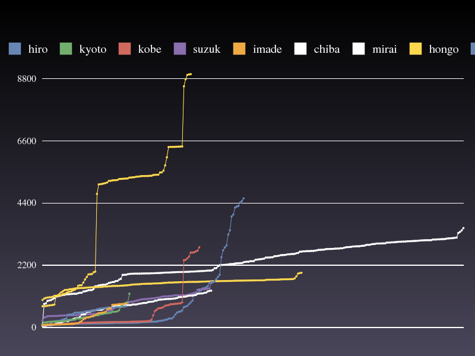

> SUCCESS TRIAL-final_dach-360450 4783.33158493 hongo000 Thu Aug 14 12:27:35 2008 43e4959f32081937df6ad0d2d84e8dbdA concatenated output of superfind (dach.sh) is located at hongo000:/home/dach000/nova/all.result.
In the following sections, we will explain our algorithms and components organization by showing code snippets derived from actual code. All programs are written in Ruby. Source codes are available at our GitHub repository.
The algorithm is quite straightforward -- each cluster executes its locally allocated jobs in parallel. No cluster-cluster job scheduling.
The master process (start.rb), which controls entire execution, runs at hongo000. Master process's lifecycle is as follows.
In the main loop (step 5), master waits until all the clusters to finish its own jobs. Here's Start#run method from start.rb.
def run
do_parallel( @clusters ) do | each |
until Cluster[ each ].finished?
Cluster[ each ].continue
end
Cluster[ each ].shutdown
end
end
All the outputs from dach.sh are redirected and gatherd to the master and stored at hongo000 (subdirectories of hongo000:~dach000/nova/results/). Then concatenated with cat, and checked with dach_api --check_ans.
On each cluster, a daemon called Novad (novad.rb) is started at the first node (kyoto000, okubo000, etc.) of each cluster, which continuously dispatches jobs to its local nodes. Novad uses SSH for starting, acquiring exit code of, and redirecting STDOUT, STDERR from remote jobs.
Again, the master does NO cluster-cluster job scheduling. The reason for this is explained at following evaluation section.
By examining master's log carefully, we found that some jobs (.fits files) are overlapped between clusters. In order to avoid unnecessary jobs and duplicated results, we discarded jobs already dispatched (Cluster#continue method from cluster.rb)
if Jobs.assigned?( job )
Log.warn "Job #{ job } already assigned. skipping..."
@job_done << job
end
Other optimizations includes parallelizations over all of code such as launching novad, job dispatching, etc. In order to easily parallelize existing code, we prepared a set of parallelization libraries. For example, Start#do_parallel executes code block passed as its argument in parallel. ThreadPool class implements general thread pool functions.
We also tuned-up the size of ThreadPool close to the maximum, but not to exhaust file descriptors.
We did no C/C++ level optimizations for superfind.
After the first successful run of 'final_dach' job, which took 4821 sec, we plotted each jobs' execution time using our tiny graph.rb script.
Automatically generated image by graph.rb is something like this.

(Note, this shows failed run because we shared hongo with other dach users by error)
By examining generated graph, the longest execution time over all jobs was about 4600 sec at okubo, and which was very close to the total execution time (= 4821 sec). This means that we need no job scheduling between clusters.
In fact, we had a very buggy implementation of cluster-cluster job scheduling using gfarm, but while our final slot, we failed to mount gfarm and decided not to use this implementation for the final run. The final result without cluster-cluster job scheduling was 4783 sec.
This is not a visualization tool, but a kind of programming technique to find underlying errors.
For testing error handling of failed jobs, we have written a bunch of dummy job script, which uses no CPU cycles but only sleeps for a while then exits with random status code.
sleep rand( 30 ) if rand( 10 ) == 0 exit 1 # FAIL else exit 0 end
This script fails at the rate of 10 %. Because the rate is completely controllable, this technique is useful for catching all the possible exceptions and errors.
We need to implement job scheduling like knapsack algorithm, with guessing each jobs' execution time from its number of stars.